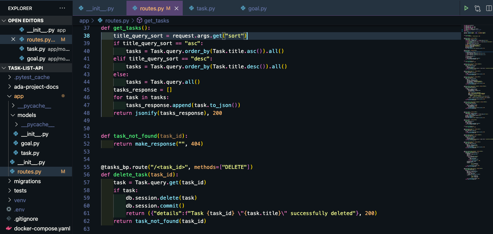

-
Video Store CLI
"Once upon a time in ye olden days to watch a movie a person had to head down to their local video store and rent a video. We are going to step into the shoes of this old timey retro video store owner and build for ourselves all of the tools that we need in order to run our successful corner video store. You have already built a Video Store API for the backend in Part 1 of the project. In keeping with our retro vibe, for this part of the project we will build a Command Line Interface (CLI) for the front end with the following minimum functionality:
Customer: create, edit, delete
Video: create, edit, delete
List customers
List videos
Check out video to customer
Check in video
[Optional] List videos checked out to a customer
[Optional] List all customers who have currently checked out a video
You can make requests using your own API via localhost:5000 or our deployed version. Go through the user stories and build the features of the CLI."
Click here for the github repo. -
Task List API
"There's so much we want to do in the world! When we organize our goals into smaller, bite-sized tasks, we'll be able to track them more easily, and complete them! If we make a web API to organize our tasks, we'll be able to create, read, update, and delete tasks as long as we have access to the Internet and our API is running! We also want to do some interesting features with our tasks. We want to be able to:
Sort tasks
Mark them as complete
Get feedback about our task list through Slack
Organize tasks with goals
... and more!"

Click here for the github repo. -
Swap Meet
"You want to organize a swap meet! You have a bunch of stuff. So do your friends! It would be awesome if each person could swap one of their things with another person's things. For this event, you want each person to register online as a vendor. Also, they should list an inventory list of things. You envision an app where vendors can swap items between different inventories. But what would that backend logic look like? For this project, given some features that the vendors want, create a set of classes, following the directions below. The directions will lead you to create many class definitions, their attributes and instance methods, and some other cool features. Vendors will be able to swap their top item and swap items by category!"

Click here for the github repo. -
Viewing Party
"You and your friends enjoy watching things together online. Of course, everyone has seen different things, has different favorites, and different things they want to watch. You've been using a spreadsheet to compare everyone's watched list, favorites list, and watchlist, but it's been getting too cumbersome. In order to find things you've watched and your friends haven't watched, or things that your friends have watched and yo haven't watched, you have to comb through the spreadsheet. You know that there are different ways we can get that information: we can use Python! For this project, you will be given some data structure that represents the things you've watched, favorited, and want to watch. The directions below will lead you to create a series of functions. These functions will modify the data, and implement features like adding and removing things between different lists. Other features include creating recommendations!"
Click here for the github repo.